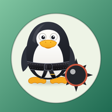
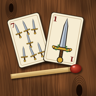
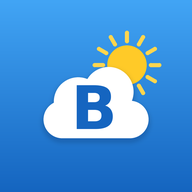

Mauricio Javier Biott
Small, calm apps for Android.
My apps

Porotos
Truco scorekeeper: keep score with beans or matchsticks on a wooden table. 15 or 30 points.
Privacy policy
Simple Nimbo
14-day GPS weather forecast, rain radar, alerts and a home-screen widget with clock.
Privacy policy